題目 : UVa Link
給定一個字串 S，可以去掉 0 個或多個字元形成 substring S’，求所有 S’ 集合中，回文字串的個數
測資
Input :
3
BAOBAB
AAAA
ABA
Output :
22
15
5
解法一
若 S 字串長度為 N，則所有 S’ 的可能性有 2N-1 種，-1 是排除掉全部都沒取的情況
再針對所有 S’ 去檢查是不是回文
檢查一字串是否為回文需耗時 O( N )，因此總耗時為 O( 2N x N)
由於有指數項，所以會非常耗時
解法二
我們可以用 Dynamic Programming ( 動態規劃 ) 來解這個問題
可以用小問題的最佳解去建構出大問題的最佳解
首先，若有一字串 S，且字串頭尾的字元是不同的 ( X != Y )
我們要求 S 的所有回文字串數量
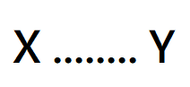
我們希望可以從小問題去求得大問題
因此若可以得知 S1 與 S2
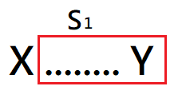
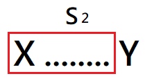
我們就可以利用他們來建構出 S = S1 + S2，但還要扣除多加的 S3 ( 類似排容原理 )
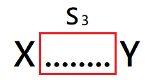
可以得到 S = S1 + S2 - S3，也就是
S 字串的回文數量 = 左子串回文數量 + 右字串回文數量 - 中間重複子字串的回文數量
那若 S 字串的頭尾的字元是相同的 ( X == X )
我們要求 S 的所有回文字串數量
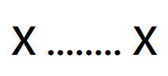
同樣的可以用左右子字串來建構並扣掉中間的重複字串
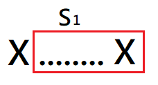
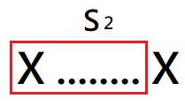
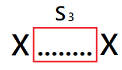
得到 S = S1 + S2 - S3
但由於 S 字串的頭尾是相同的，我們可以把 S 字串看作是S3字串頭尾都加上 X
因此我們還要考慮 X{ S3 }X 的回文字串數量 ( 頭尾 X 不能去掉，中間 {S3} 的部分則可以全空 )
例如 : S3 = ABA
則 S3 的所有回文字串數量有 5 種
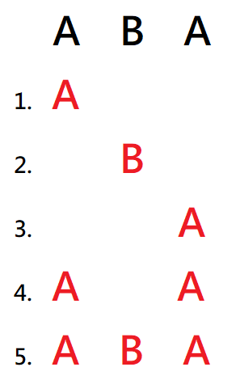
X{ S3 }X 的所有回文字串數量有 6 種
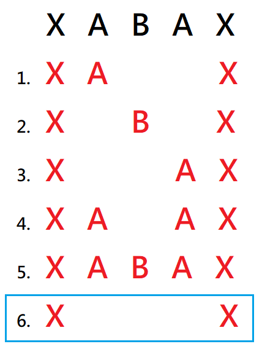
可以發現 X{ S3 }X 比 S3 多了一種組合，那就是 S3 全部不選
因此，字串 S 的全部回文數量為 S = ( S1 + S2 - S3 ) + ( S3 + 1 )
整理後得到 S = S1 + S2 + 1，也就是
S 字串的回文數量 = 左子串回文數量 + 右字串回文數量 + 1
實作細節
若要求 S 字串中的 S1 子字串，index = i ~ k
並且用 dp[i][k] 來記錄 substring S1 : S[i] ~ S[k] 的所有回文數量
有 2 個規則 :
- 若 S[i] == S[k] :
dp[i][k] = dp[i+1][k] + dp[i][k-1] + 1- 若 S[i] != S[k] :
dp[i][k] = dp[i+1][k] + dp[i][k-1] - dp[i+1][k-1]
在程式一開始，我們需要先對 dp 2D Array 去做初始化
- 一個字元的子字串就是一個回文
- k 必須大於等於 i，因此 k < i 的部分回文數量為 0
因此可以得到下列狀態
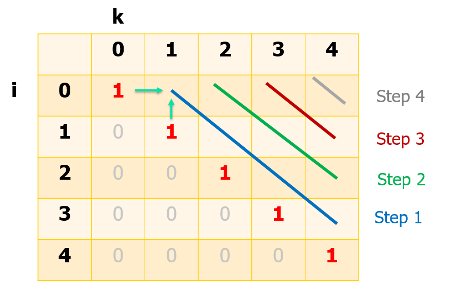
由於 dp[i][k] 的字串會需要 dp[i+1][k] ( 該格子左方 )、dp[i][k-1] ( 該格子下方 ) 與 dp[i+1][k-1] ( 左下方 )
所以計算方式為斜的 ( 如上圖 )
舉例
假設 S = BAOBAB，初始化後狀態如下
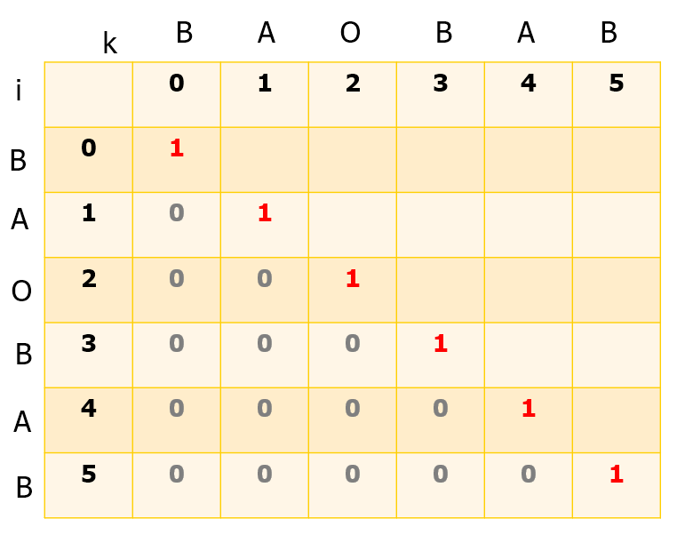
首先計算 dp[0][1]，由於 S[0] = B 且 S[1] = A，不相等
因此 dp[0][1] = dp[1][1] + dp[0][0] - dp[1][0] = 2
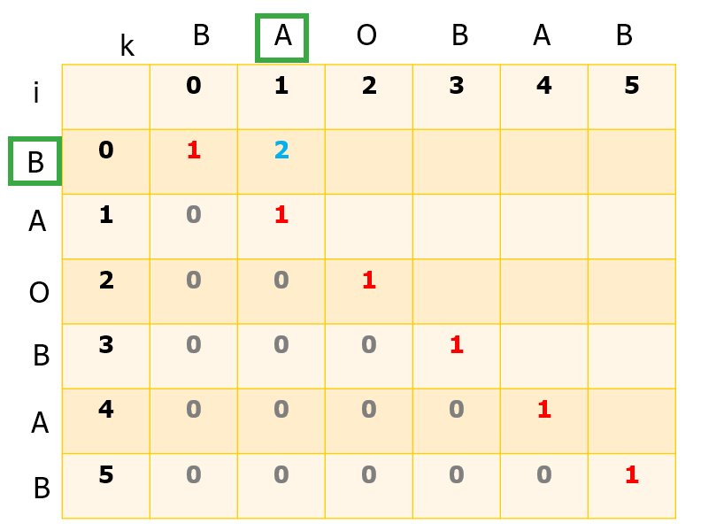
再來是 dp[1][2]
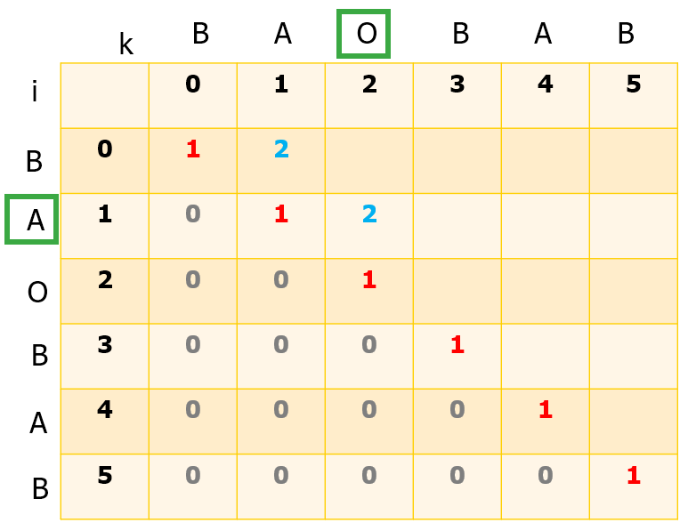
直到這條斜線的最後
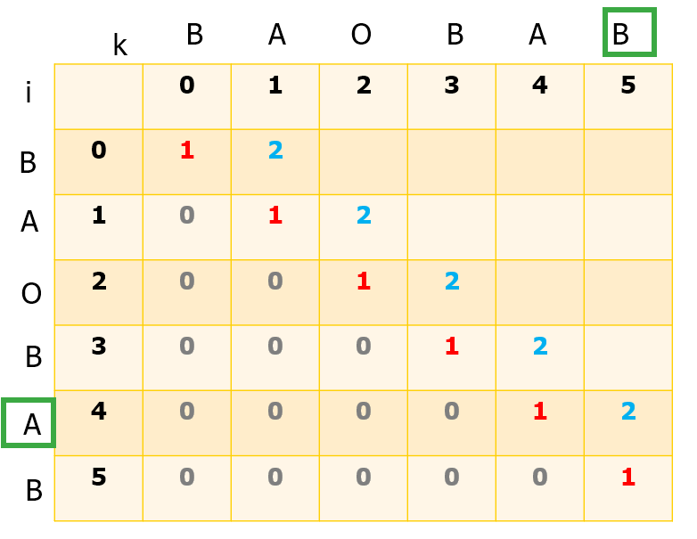
換下一條斜線
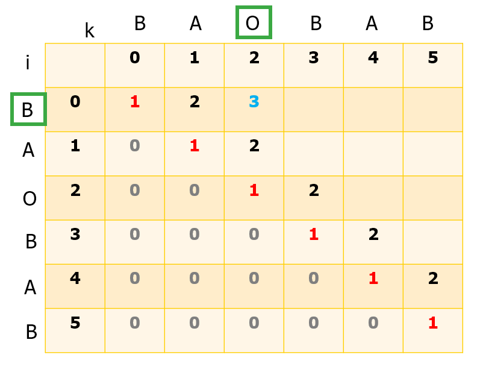
到最後
注意這邊 S[3] = B 與 S[5] = B 相等，因此dp[3][5] = dp[3][4] + dp[4][5] + 1 = 5
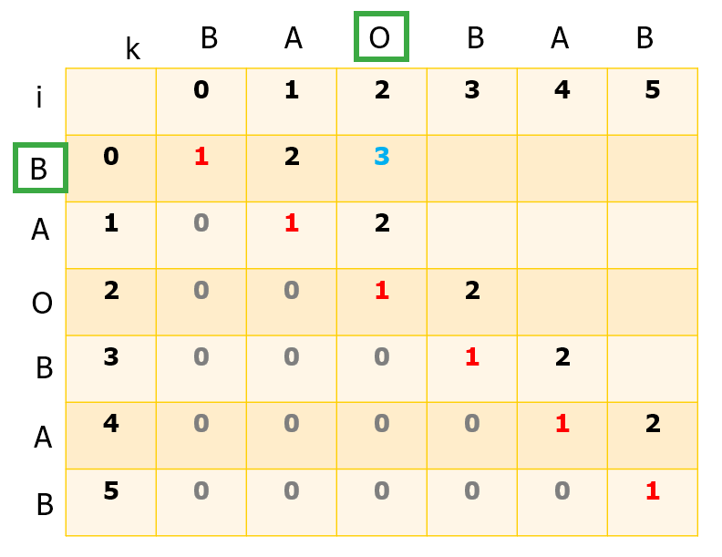
然後一直做到最後
S[0][5] 就是答案
程式碼
1 |
|